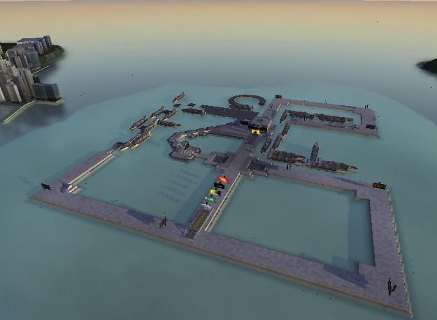

- 


TrackMania Sunrise : Speed-Up ! est un mod de contenu bêta pour TMS.
Participation au développement aux côtés de la Communauté de Modding TrackMania
Le développement du mod sur TmSunrise a commencé en février-mars de l'année 2021. Pendant cette période, beaucoup de contenu est apparu et a été modifié dans le mod. Initialement, le développement a été lancé fin 2018-début 2019. À l'époque, le mod était basé sur le jeu TM United 2006 (pas Forever), mais après la publication du patch Win10 par KRBDZSKL, le mod est immédiatement passé à TMS.
Dans ce mod, le contenu de la version bêta sera restauré et recréé : pistes, skins, interface, sons, etc.
Un compte Discord est requis pour télécharger le jeu. C'est gratuit!
Date de sortie : 30 Septembre 2021